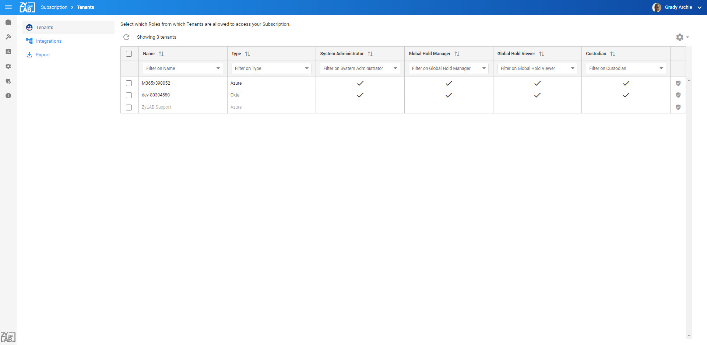

Note: The Import, Export and Go Live functionality is only available for users with the System Administrator Role and Global Hold Manager Role. Import and Erase are only available in Draft state.
The Subscription page allows you to manage your subscription and is divided in several sections: Tenants, Integrations, Locations, Import and Export. By default, the Tenants tab is shown first.
|
|
Note: The Import, Export and Go Live functionality is only available for users with the System Administrator Role and Global Hold Manager Role. Import and Erase are only available in Draft state. |
Click to view full screen image:


The Draft state is intended to be used during the import and export of hold information and details.
|
|
Note: The Import, Export and Go Live functionality is only available for users with the System Administrator Role and Global Hold Manager Role. Import and Erase are only available in Draft state. |
Migration entails all functionality that enables you to move hold information, either from or to another system.
Via the Import option you can perform bulk imports of hold information from other systems. Import comes with an Erase option that allows you to remove imported content and re-import again (it is not possible to import to a subscription that already contains data).
|
The Import and Erase option is only available when a Subscription is in Draft state. Draft state means that all functionality is available, except communications. This means that it is not possible to send any emails via this subscription. |
Via the Export option you can perform an export of all hold information in
Export can also be used to first create Holds, Messages, etc. and then use these as samples for Import again. Export is always available.
It is always possible to export your data.